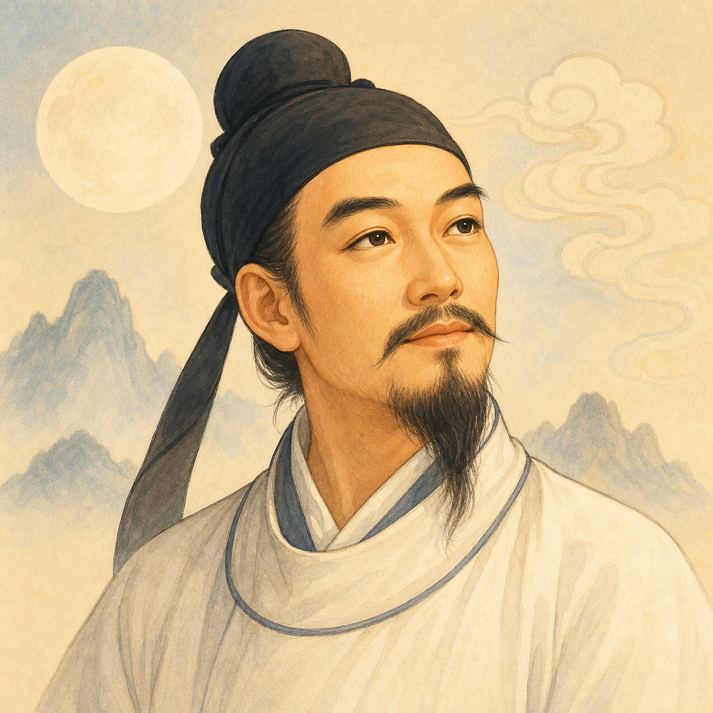

关系越深，颜色越沉静
使用相近的青蓝色相和逐渐加深的视觉感受，让颜色表达长期积累，同时避开现有人物卡的蓝／紫／橙／金等级色，以及红粉爱心带来的恋爱和维持压力。正式产品只显示当前阶段，不会把五色同时排成进度表。
你与李白初识你与李白相知你与李白小友你与李白老友你与李白莫逆之交
原型为了评审才并列展示五色；生产界面只显示当前标签。阶段文字永远保留，颜色只是第二条反馈通道。
关系标签可见，分数、门槛和攻略不可见。左侧阶段切换只用于评审五种行为合同，正式产品里不存在。

使用相近的青蓝色相和逐渐加深的视觉感受，让颜色表达长期积累，同时避开现有人物卡的蓝／紫／橙／金等级色，以及红粉爱心带来的恋爱和维持压力。正式产品只显示当前阶段，不会把五色同时排成进度表。
从灰蓝、青、绿、赭金到砖红。变化明显，但更容易被理解成稀有度、恋爱进度或奖励，因此不建议默认使用。
文字始终使用同一墨色，只轻微改变底色和边框。最稳健、最不像等级，但关系变化的成就反馈也最弱。
在触发回合之后出现，不抢焦点、不遮挡输入。异步晋级时可在下次进入后只展示一次。
“我们已经谈过不少难题，分歧也不必绕开。”
仪式感更强，但容易像抽卡结算，也会打断用户阅读。仅作为用户研究对照。
继续聊，才能关闭这一层。
显示旧阶段与新阶段，提供一句符合人物风格的反馈；不解释原因、不展示下一阶段，也不提出“再做一件事”。四次晋级使用同一组件，不使用稀有度颜色或星级。
计算中继续显示旧阶段，不出现“正在升级”。保存成功后才更新标签。用户离开后完成的晋级，在下次恢复线程后展示一次；刷新和访客合并不会重复弹出。
关系会随着持续且有意义的共同探索自然变化。具体分数、门槛和下一阶段条件不会展示。
来自 7 月 18 日的对话。人物可以自然承接，但不得扩写成未发生的经历。
撤销后立即停止使用，不影响关系阶段。
住址、学校、健康、创伤和“这是我们的秘密”等内容不会成为关系推进证据。
标签位置显示等宽骨架，不先闪现“初识”。
未获得人物时不保存关系。
保留最后标签并明确暂停，不提取新证据，也不注入关系上下文。
有缓存则显示“同步中”；无缓存时显示暂不可用，绝不回退成初识。
继续使用旧称呼，返回焦点到许可卡，不乐观更新 Prompt。
晋级只更新边框、文案和标签；无放大、粒子、闪烁或自动滚动。
分歧也不必绕开。
标签保留在人物栏，详情使用全高底部抽屉；里程碑不覆盖输入框或底部导航。
控件至少 48px；标签读作“你与李白的关系：老友。打开关系与记忆设置”。变化不只靠颜色表达。
界面始终写“你与李白”，避免与李白—杜甫等有史料依据的人物关系混淆。